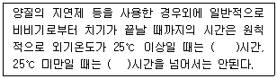
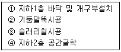
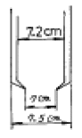
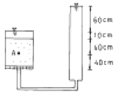
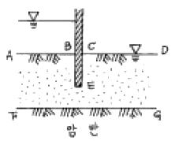

건설재료시험기사 (2005-03-06 기출문제)
1과목: 콘크리트공학
1. 다음 중 프리스트레스트 콘크리트의 프리스트레스 감소의 원인이 아닌 것은?
- 강재의 릴렉세이션
- 콘크리트의 건조수축
- 콘크리트의 크리프
- 쉬이즈관의 크기
(정답률: 알수없음)

2. 여러 가지 특수 콘크리트와 관련된 재료 및 시공방법 등을 짝지은것 중 옳지 않은 것은?
- 한중콘크리트-보온양생, 급열양생
- 매스콘크리트-프리쿨링, 파이프쿨링
- 프리팩트콘크리트-트레미, 밑열림 포대
- 서중콘크리트-저온의 혼합수, 지연형 감수제
(정답률: 알수없음)
3. 다음 중 콘크리트의 초기균열의 원인이 아닌 것은?
- 소성수축
- 소성침하
- 수화열
- 알칼리-골재 반응
(정답률: 알수없음)
4. 소요의 품질을 갖는 프리팩트 콘크리트를 얻기 위해서 주입하는 모르타르가 갖추어야할 것 중 틀린 것은?
- 압송과 주입이 쉬워야 한다.
- 재료분리가 적고, 주입되어서 경화되는 사이에 블리딩이 적어야 한다.
- 경화 후에 충분한 내구성 및 수밀성과 강재를 보호하는 성능을 가져야 한다.
- 주입후 경화되는 사이에 팽창되지 않아야 한다.
(정답률: 알수없음)
5. 일정량의 공기연행제를 사용할 때 공기량이 증대되는 경우로 옳은 것은?
- 물-시멘트비가 작을때
- 슬럼프가 작을때
- 콘크리트의 온도가 낮을수록
- 단위 잔골재량이 작을수록
(정답률: 알수없음)
6. 콘크리트의 압축강도가 30MPa 이하이고 단위질량( wc )이 1,450~2,500kg/m3 인 콘크리트의 탄성계수(E)를 구하는 식으로 옳은 것은? (단, fck : 콘크리트의 설계기준강도(MPa))
- E=200,000 MPa
- E=0.043wc1.5 √fck MPa
- E=0.043wc1.5 fck MPa
- E=√0.043 wc1.5 fck MPa
(정답률: 알수없음)
7. AE 콘크리트에 관한 설명중 옳지 않은 것은?
- 시공 중 공기량은 air meter로 항상 측정하여 일정하게 하여야 한다.
- AE제에 의해서 발생된 공기는 볼베어링과 같은 작용을 하여 콘크리트에 유동성을 준다.
- AE콘크리트는 보통콘크리트보다 염류 또는 동결융해에 대한 저항성이 저하된다.
- 공기량은 믹싱시간이 길수록 감소한다.
(정답률: 알수없음)
8. 콘크리트의 압축강도를 시험하여 슬래브 및 보 밑면의 거푸집과 동바리를 떼어낼 때 콘크리트 압축강도 기준값으로 맞는 것은?
- 설계기준강도 × 1/3이상, 14MPa이상
- 설계기준강도 × 2/3이상, 14MPa 이상
- 설계기준강도 × 1/3이상, 10MPa 이상
- 설계기준강도 × 2/3이상, 10MPa 이상
(정답률: 알수없음)
9. 골재의 밀도가 2.65g/cm3이고 단위용적질량이 1.5t/m3인 굵은 골재의 실적률과 공극률은?
- 실적률 - 176.7%, 공극률 - 76.7%
- 실적률 - 56.6%, 공극률 - 43.4%
- 실적률 - 43.4%, 공극률 - 56.6%
- 실적률 - 76.7%, 공극률 - 23.3%
(정답률: 알수없음)
10. 콘크리트 타설 및 다지기 작업시 주의해야 할 사항으로 틀린 것은?
- 연직 시공 일 때 슈트 등의 배출구와 타설면까지의 높이는 1.5m이하를 원칙으로 한다.
- 내부진동기를 이용하여 진동다지기를 할 경우 1개소당 진동시간은 5~15초로 한다.
- 타설한 콘크리트를 거푸집 안에서 횡방향으로 이동시켜서는 안된다.
- 내부진동기를 사용하여 진동다지기를 할 경우 삽입간격은 일반적으로 1m이하로 하는 것이 좋다.
(정답률: 알수없음)
11. 페놀프탈레인 용액을 사용한 콘크리트의 탄산화 판정시험에서 탄산화된 부분에서 나타나는 색은?
- 붉은색
- 노란색
- 청색
- 착색되지 않음
(정답률: 알수없음)
12. 온도균열의 발생을 억제하기 위한 시공상의 대책으로 옳지 않은 것은?
- 1회 타설높이를 크게 할 것
- 재료를 사용하기전에 미리 온도를 낮추어 사용할 것
- 수화열이 낮은 시멘트를 선택할 것
- 단위 시멘트량을 적게할 것
(정답률: 알수없음)
13. 콘크리트의 유동화에 대한 설명 중 옳지 않은 것은?
- 유동화제의 계량은 질량 또는 용적으로 계량하고 그 계량 오차는 1회에 3% 이내로 한다.
- 재유동화는 유동화제의 허용한도를 초과해서 첨가할 염려가 있고, 장기강도에 영향을 미칠 수 있으므로 원칙적으로 해서는 안된다.
- 유동화제는 원액으로 사용하고 미리 정한 소정량을 여러번 나누어 첨가한다.
- 콘크리트 플랜트에서 트럭애지테이터에 유동화제를 첨가하여 저속으로 휘저으면서 운반하고 공사현장 도착 후에 고속으로 휘저어 유동화한다.
(정답률: 알수없음)
14. 다음 중 굳지않은 콘크리트의 워커빌리티 시험방법으로 적당하지 않은 것은?
- 슬럼프시험
- Vee-Bee 컨시스턴시 시험
- Vicat 장치에 의한 시험
- 구관입 시험
(정답률: 알수없음)
15. 콘크리트 비비기에 대한 설명으로 잘못된 것은?
- 비비기 시간에 대한 시험을 실시하지 않은 경우 그 최소시간은 강제식 믹서일 때에는 1분 이상을 표준으로 해도 좋다.
- 비비기는 미리 정해둔 비비기 시간의 2배 이상 계속해서는 안된다.
- 믹서 안의 콘크리트를 전부 꺼낸 후가 아니면 믹서 안에 다음 재료를 넣어서는 안된다.
- 연속믹서를 사용할 경우, 비비기 시작 후 최초에 배출되는 콘크리트는 사용해서는 안된다.
(정답률: 알수없음)
16. 다음은 PC강재에 요구되는 일반적인 특성을 설명한 것이다 옳지 않은 것은?
- 인장강도가 높아야 한다.
- 릴랙세이션이 커야 한다.
- 어느 정도의 늘음과 인성이 있어야 한다.
- 항복비가 커야 한다.
(정답률: 알수없음)
17. 현장의 골재 상태가 체분석 결과 모래속에 5mm체에 남는 것이 6%, 자갈속에 5mm체를 통과하는 것이 11%였다. 시방배합표상의 단위잔골재량은 632kg/m3며, 단위굵은골재량은 1176 kg/m3다. 현장배합을 위한 모래량은 얼마인가?
- 522 kg/m3
- 537 kg/m3
- 612 kg/m3
- 648 kg/m3
(정답률: 알수없음)
18. 괄호속에 적당한 값은?

- 0.5, 1
- 1, 1.5
- 1.5, 2
- 2, 2.5
(정답률: 알수없음)
19. 콘크리트의 인장강도 측정을 위해 간접적으로 주로 시행하는 시험을 무엇이라 하는가?
- 초음파시험
- 인발시험
- 할열시험
- 휨인장시험
(정답률: 알수없음)
20. 방사선을 차폐할 목적으로 사용되는 방사선 차폐용 콘크리트에 관한 설명 중 틀린 것은?
- 차폐용 콘크리트로서의 필요한 성능인 밀도, 압축강도, 설계허용온도, 결합수량, 붕소량 등을 확보하여야 한다
- 방사선 차폐용 콘크리트의 슬럼프는 150mm 이하로 한다
- 방사선 차폐용 콘크리트는 열전도율이 작고, 열팽창률이 커야되므로 비중이 작은 골재를 사용한다
- 물-시멘트비는 50%이하를 원칙으로 한다
(정답률: 알수없음)
2과목: 건설시공 및 관리
21. 다음 각종 준설선에 대한 설명으로 틀린 것은?
- 그래브선은 깊이에 관계없이 좁은 장소나 구조물의 기초준설에 적당하다.
- 디퍼준설선은 파쇄된 암석이나 발파된 암석의 준설에는 부적당하다.
- 펌프선은 사질해저의 대량준설과 매립을 동시에 시행할 수 있다.
- 쇄암선은 해저의 암반을 파쇄하는데 사용한다.
(정답률: 알수없음)
22. 터널의 안정성 및 지반거동과 지보공의 효과확인을 할 수 있도록 계측관리를 실시하는데 계측항목중 일상 계측에 속하지 않는 것은?
- 갱내관찰조사
- 내공변위측정
- 지중변위측정
- 천단침하측정
(정답률: 알수없음)
23. 현장 콘크리트 말뚝의 장점이 아닌 것은?
- 지층의 깊이에 따라 말뚝길이를 자유로이 조절 할수 있다.
- 말뚝선단에 구근을 만들어 지지력을 크게 할수 있다.
- 재료의 운반에 제한을 받지 않는다.
- 현장 지반중에서 제작 양생됨으로 품질관리가 쉽다.
(정답률: 알수없음)
24. 작업거리가 60m인 불도우저 작업에 있어서 전진속도 40m/min 후진속도 50m/min 기어조작시간 15초일때 싸이클 타임은?
- 2.7min
- 2.95min
- 17.7min
- 19.35min
(정답률: 알수없음)
25. 다음 조건 중 성토 토사로서 적합하지 않은 것은?
- 안정도에 필요한 전단강도를 가질 것
- 압축에 대해 침하가 심하지 않을 것
- 건조밀도가 낮을 것
- 중기계의 주행이 잘될 것
(정답률: 알수없음)
26. 토적 곡선(Mass curve)에 대한 설명 중 틀린 것은?
- 절토구간의 토적곡선은 상승곡선이 되고, 성토구간의 토적곡선은 하향곡선이 된다.
- 평균운반거리는 전토량 2등분 선상의 점을 통하는 평행선과 나란한 수평거리로 표시한다.
- 동일 단면내의 절토량, 성토량은 토적곡선에서 구할 수있다.
- 곡선의 최대값을 나타내는 점은 절토에서 성토로 옮기는 점이다.
(정답률: 알수없음)
27. 옹벽의 수평 저항력을 증가시키려면 다음중 어느 방법이 가장 좋은가?
- 옹벽의 비탈구배를 크게 한다.
- 옹벽 전면에 Apron를 설치한다.
- 옹벽 기초밑판에 돌기 Key를 설치한다.
- 옹벽 배면에 Anchor를 설치한다.
(정답률: 알수없음)
28. 1개마다 양·불량으로 구별할 경우 사용하나 불량률을 계산하지 않고 불량개수에 의해서 관리하는 경우에 사용하는 관리도는?
- U관리도
- C관리도
- P관리도
- Pn관리도
(정답률: 알수없음)
29. 역타(Top-Down)공법의 시공순서를 옳게 나타낸 것은?

- 1→2→3→4
- 2→3→4→1
- 1→4→2→3
- 3→2→1→4
(정답률: 알수없음)
30. 터널의 특수공법으로서 침매(沈埋)공법을 설명한 내용으로 옳지 않은 것은?
- 유수가 빠른 곳에는 강력한 비계가 필요하고 침설작업이 곤란하다.
- 단면 형상은 비교적 자유롭고 큰 단면으로 만들 수 있다.
- 협소한 장소의 수로나 항해선박이 많은 곳도 쉽게 설치 된다.
- 연약지반에도 시공이 가능하며 공기가 단축된다.
(정답률: 알수없음)
31. fill dam(필댐)에 대한 기술 중 옳지 않은 것은?
- 댐지점 주위에서 얻을 수 있는 천연재료를 이용할 수있다.
- 침하가 거의 발생하지 않는 구조물이므로 통상 여수로와 같은 구조물을 제체 위에 설치한다.
- 시공에서 최적의 장비를 투입함으로서 기계화율을 높일 수 있다.
- 비교적 지지력이 작은 풍화암이나 하천 퇴적층의 기초 지반에도 투수처리를 함으로서 그 축조가 가능하다.
(정답률: 알수없음)
32. 다음은 말뚝의 부주면 마찰력(negative friction)에 관한 설명이다. 옳지 않은 것은?
- 말뚝의 주변지반이 말뚝의 침하량 보다 상대적으로 큰 침하를 일으키는 경우 부주면 마찰력이 생긴다.
- 지하수위가 상승할 경우 부주면 마찰력이 생긴다.
- 표면적이 작은 말뚝을 사용하여 부주면 마찰력을 줄일 수 있다.
- 말뚝 직경보다 약간 큰 케이싱을 박아서 부주면 마찰력을 차단할 수 있다.
(정답률: 알수없음)
33. 암거의 매설을 위한 기초공에 대한 설명 중 옳지 않은 것은?
- 기초가 다소 불량한 곳은 침목, 콘크리트 침목 등의 기초공을 해야한다.
- 기초가 양호하면 암거를 직접 매설하여도 된다.
- 기초바닥이 매우 불량할때는 말뚝기초를 하여야한다.
- 부등침하의 우려가 있는 기초에는 잡석, 조약돌 등을 포설한다.
(정답률: 알수없음)
34. 보통토(사질토)를 재료로 하여 36,000m3 의 성토를 하는 경우 굴착 및 운반 토량(m3)은 얼마인가? (단, 토량환산계수 L = 1.25 , C = 0.90)
- 굴착토량 = 40,000, 운반토량 = 50,000
- 굴착토량 = 32,400, 운반토량 = 40,500
- 굴착토량 = 28,800, 운반토량 = 50,000
- 굴착토량 = 32,400, 운반토량 = 45,000
(정답률: 알수없음)
35. 다음 중 포장 두께를 결정하기 위한 시험이 아닌 것은?
- CBR시험
- 평판재하시험
- 마샬시험
- 1축압축시험
(정답률: 알수없음)
36. 8ton의 덤프트럭에 1.2m3의 버킷을 갖는 백호로 흙을 적재하고자 한다. 흙의 단위 중량이 1.7 t/m3이고 토량변화율(L)은 1.3이고 버킷계수가 0.9일때 트럭 1대당 백호 적재회수는 얼마인가?
- 5회
- 6회
- 7회
- 8회
(정답률: 알수없음)
37. 공정관리 기법인 PERT기법을 설명한 것 중 틀린 것은?
- 개발은 미군수국(s.p)에 의하여 개발되었다.
- 신규사업, 비반복 사업에 많이 이용된다.
- 3점 시간 추정법을 사용한다.
- activity 중심의 일정으로 계산한다.
(정답률: 알수없음)
38. 표면차수벽 댐은 core의 filter 층이 없이 제체를 느슨한 암으로 축조하여 상하사면은 암의 안식각에 가깝게 하고, 제체가 어느 정도 축조된 후 상류측에 불투수층 차수벽을 설치하여 차수역할을 하며 차수벽과 rock 사이에는 입경이 작은 암석층을 두어 완충역할을 하게 한다. 다음 중 표면차수벽 댐을 채택할 수 있는 조건이 아닌 것은?
- 대량의 점토 확보가 용이한 경우
- 짧은 공사기간으로 급속시공이 필요한 경우
- 동절기 및 잦은 강우로 점토시공이 어려운 경우
- 추후 댐 높이의 증축이 예상되는 경우
(정답률: 알수없음)
39. 벤치 컷(bench cut)의 벤치의 높이 12m를 취하고 구멍 간격을 1.5m, 최소 저항선을 1.5m로 하고 중경 화강암(中硬花崗岩)의 암석을 굴착할 경우 장약량(裝藥量)은 얼마인가? (단, 폭파계수 C = 0.62이다.)
- 16.74㎏
- 25.36㎏
- 32.76㎏
- 22.67㎏
(정답률: 알수없음)
40. 교대에 작용하는 외력 중 연직력에 속하지 않는 것은?
- 교대 배면의 토사 및 재 하중에 의한 토압
- 상부구조의 고정하중
- 활하중에 의한 지점의 최대 하중
- 충격하중
(정답률: 알수없음)
3과목: 건설재료 및 시험
41. 시멘트와 합성수지, 유제 또는 합성고무 라텍스를 소재로 한 것을 무엇이라 하는가?
- 가스켓
- 케미칼 그라우트
- 불포화 폴리에스테르
- 폴리머 시멘트 콘크리트
(정답률: 알수없음)
42. 폭파력은 그다지 강력하지 않으나 값이 싸고, 취급 및 보관의 위험성이 적고, 발화가 간단하여 소규모 폭파에 사용되는 것은?
- 다이너마이트
- 흑색화약
- 칼릿
- 니트로 글리세린
(정답률: 알수없음)
43. 블로운(brown) 아스팔트와 스트레이트(straight) 아스팔트의 성질에 관한 설명중 옳지 않은 것은?
- 스트레이트 아스팔트는 블로운 아스팔트 보다 연화점이 낮다.
- 스트레이트 아스팔트는 블로운 아스팔트보다 감온성이 적다.
- 블로운 아스팔트는 스트레이트 아스팔트보다 유동성이 적다.
- 블로운 아스팔트는 스트레이트 아스팔트보다 방수성이 적다.
(정답률: 알수없음)
44. 다음 설명 중 틀린 것은?
- 혼화재(混和材)에는 플라이 애쉬(fly-ash), 고로 슬래그(slag), 규산백토 등이 있다.
- 혼화제(混和劑)에는 AE제, 경화촉진제, 방수제 등이 있다.
- 혼화재(混和材)는 그 사용량이 비교적 적어서 그 자체의 부피가 콘크리트 배합의 계산에서 무시하여도 좋다.
- AE제에 의해 만들어진 공기를 연행공기라 한다.
(정답률: 알수없음)
45. 골재의 조립율(Fineness Modulus)을 알아내기 위해서 사용하는 체가 아닌 것은?
- 25mm 체
- 10mm 체
- 5mm 체
- 2.5mm 체
(정답률: 알수없음)
46. 콘크리트용 방수제에 대한 다음 설명 중 맞지 않는 것은?
- 굳지않은 콘크리트 중의 미세공극을 충전하면서 분산 및 세분화 시킨다.
- 콘크리트 워커빌리티를 개선하고 치기시 발생하는 공극을 억제한다.
- 시멘트 입자표면에 흡착하여 시멘트와 물과의 접촉을 차단함으로써 시멘트의 수화를 지연시킨다.
- 시멘트의 수화반응에 의하여 생성되는 가용물질의 용출을 방지하고 불용성 염류를 형성하게 한다.
(정답률: 알수없음)
47. 시멘트의 강열감량(ignition loss)에 대한 설명으로 틀린것은?
- 강열감량은 시멘트에 1000℃의 강한 열을 가했을 때의 시멘트 감량이다.
- 강열감량은 시멘트 중에 함유된 H2O와 CO2의 양이다.
- 강열감량은 클링커와 혼합하는 석고의 결정수량과 거의같은 양이다.
- 시멘트가 풍화하면 강열감량이 적어지므로 풍화의 정도를 파악하는데 사용된다.
(정답률: 알수없음)
48. 강의 성질에 영향을 미치는 첨가원소의 영향으로 잘못된것은?
- 탄소(C)량의 증가에 따라 인장강도, 항복점, 경도도 증가한다.
- 망간(Mn)은 어느 정도까지는 강의 강도, 경도 및 인성을 증가시키고 냉간가공성을 향상시킨다.
- 알루미늄(Al)은 강력한 탈산제로 강조직의 미립화에 효과적이다.
- 니켈(Ni) 및 크롬(Cr)은 소량을 사용한 경우에도 강도를 증진시키고 다량 사용한 경우에는 내식성, 내열성을 증가시킨다.
(정답률: 알수없음)
49. 다음 설명 중 틀린 것은?
- 폭약 또는 화약을 폭발하기 위해 기폭약 또는 첨장약을 관체에 장전한 것을 뇌관이라고 한다.
- 흑색화약을 중심으로 해서 그 주위를 마사, 종이, 테이프 등으로 피복한 것을 도화선이라고 한다.
- 대폭파 또는 수중폭파를 동시에 실시하기 위해 뇌관대신 사용하는 것을 도화선이라고 한다.
- 면화약을 심약으로 하고 마사, 면사 등으로 싸서 방습 포장하는 것을 도폭선이라고 한다.
(정답률: 알수없음)
50. 건설공사 품질시험기준중 흙댐의 중심점토에 대하여 함수량 시험은 토량이 3,000m3이면 몇 회를 하여야 하는가?
- 3회
- 5회
- 10회
- 15회
(정답률: 알수없음)
51. 다음은 골재의 단위용적질량에 대한 설명이다. 잘못된 것은?
- 단위용적질량의 정의는 1m3의 골재 질량을 말한다.
- 단위용적질량의 공극의 비율을 백분율로 나타낸 것을 실적율이라 한다.
- 콘크리트의 배합을 용적으로 표시하는 경우 골재를 용적으로 계량할 때 필요한 사항이다.
- 골재의 밀도, 모양, 입도 및 다짐방법 등에 의하여 값이 크게 달라진다.
(정답률: 알수없음)
52. 시멘트 모르타르의 압축강도 시험에서 공시체의 양생온도는?
- 10°± 2℃
- 15°± 2℃
- 23°± 2℃
- 30°± 2℃
(정답률: 알수없음)
53. 콘크리트용 혼화재로 실리카흄(Silica fume)을 사용한 경우 효과에 대한 설명으로 잘못된 것은?
- 콘크리트의 재료분리 저항성, 수밀성이 향상된다.
- 알칼리 골재반응의 억제효과가 있다.
- 내화학약품성이 향상된다.
- 단위수량과 건조수축이 감소된다.
(정답률: 알수없음)
54. 건설공사 품질시험기준 중 도로공사의 흙에 대한 현장밀도 시험의 실시 빈도가 가장 적은 경우는?
- 노상
- 노체
- 동상방지층
- 보조기층
(정답률: 알수없음)
55. 다음 중 목면, 마사, 폐지 등을 물에서 혼합하여 원지를 만든 후 여기에 스트레이트 아스팔트를 침투시켜 만든 것으로 아스팔트 방수의 중간층재로 사용되는 것은?
- 아스팔트 타일(Tile)
- 아스팔트 펠트(felt)
- 아스팔트 시멘트(Cement)
- 아스팔트 컴파운드(Compound)
(정답률: 알수없음)
56. 마샬시험방법에 따라 아스팔트 콘크리트 배합설계를 진행중이다. 재료 및 공시체에 대한 측정결과는 아래와 같다. 포화도는 약 몇 %인가? (단, 아스팔트의 비중(G) : 1.025,아스팔트의 함량(A) : 5.8%, 공시체의 실측밀도 (d) : 2.366, 공시체의 공극율(vo): 4.2%)
- 56.0%
- 58.8%
- 76.1%
- 77.9%
(정답률: 알수없음)
57. 공기중 건조상태의 골재 500g을 물 속에 24시간 침지한 후 측정한 골재의 무게는 510g이다. 이 골재를 다시 건조로에서 건조시켰을 때 절대건조 중량이 482g이었다. 이 골재의 함수율은?
- 3.8%
- 4.8%
- 5.8%
- 6.8%
(정답률: 알수없음)
58. 건설재료로 사용되는 목재 중 합판의 특성에 대한 다음 설명 중 틀린 것은?
- 함수율 변화에 의한 신축변형은 방향성을 가지며 그 변형량은 적다.
- 통나무판에 비해서 얇은 판으로 높은 강도를 얻을 수있다.
- 곡면가공을 하여도 균열의 발생이 적다.
- 표면가공으로 흡음효과를 얻을 수 있고 의장적 효과를 얻을 수 있다.
(정답률: 알수없음)
59. 시멘트 조성 광물에서 수축률이 가장 큰 것은?
- C3S
- C3A
- C4AF
- C2S
(정답률: 알수없음)
60. 암석의 구조에 대한 다음 설명중 옳은 것은?
- 암석의 가공이나 채석에 이용되는 것으로 암석의 갈라지기 쉬운 면을 석리라 한다.
- 퇴적암이나 변성암의 일부에서 생기는 평행상의 절리를 벽개라 한다.
- 암석 특유의 천연적으로 갈라진 금을 절리라 한다.
- 암석을 구성하고 있는 조암광물의 집합상태에 따라 생기는 눈모양을 층리라 한다.
(정답률: 알수없음)
4과목: 토질 및 기초
61. 현장 흙의 단위무게시험(들밀도시험)을 한 결과 파낸 구멍의 부피는 2,000㎝3 이고 파낸 흙의 중량이 3,240g이며 함수비는 8%였다. 이 흙의 간극비는 얼마인가? (단, 이 흙의 비중은 2.70이다.)
- 0.80
- 0.76
- 0.70
- 0.66
(정답률: 알수없음)
62. 액상화(liquefaction)를 방지하기 위한 공법으로 거리가 먼 것은?
- 바이브로컴포우져(vibrocomposer) 공법
- 웰포인트(wellpoint) 공법
- 샌드컴팩션파일(sand compaction pile) 공법
- 샌드 드레인(sand drain) 공법
(정답률: 알수없음)
63. 어떤 흙에 대해서 직접 전단시험을 한 결과 수직응력이 10㎏/㎝2일 때 전단저항이 5㎏/㎝2이었고, 또 수직응력이 20㎏/㎝2일 때에는 전단저항이 8㎏/㎝2이었다. 이 흙의 점착력은?
- 2㎏/㎝2
- 3㎏/㎝2
- 8㎏/㎝2
- 10㎏/㎝2
(정답률: 알수없음)
64. 다음 그림과 같은 Sampler에서 면적비는 얼마인가?

- 5.97%
- 14.62%
- 5.80%
- 14.80%
(정답률: 알수없음)
65. 체적이 V = 5.83㎝3인 점토를 건조로에서 건조시킨 결과 무게는 Ws = 11.26g이었다. 이 점토의 비중이 G = 2.67이라고 하면 이 점토의 수축한계값은 약 얼마인가?
- 28%
- 14%
- 8%
- 3%
(정답률: 알수없음)
66. 점성토에 대한 압밀배수 삼축압축시험 결과를 p - q diagram에 그린 결과, kf - line의 경사각 α는 20°이고 절편 m은 3.4㎏/㎝2이었다. 이 점성토의 내부마찰각(ø) 및 점착력 (C)의 크기는?
- ø = 21.34°, C = 3.65㎏/㎝2
- ø = 23.54°, C = 3.71㎏/㎝2
- ø = 21.34°, C = 9.34㎏/㎝2
- ø = 23.54°, C = 8.58㎏/㎝2
(정답률: 알수없음)
67. 점착력이 1.4t/m2, 내부마찰각이 30° 단위중량이 1.85t/m3 인 흙에서 인장균열 깊이는 얼마인가?
- 1.74m
- 2.62m
- 3.45m
- 5.24m
(정답률: 알수없음)
68. 투수계수가 2 × 10-5㎝/sec, 수위차 15m인 필댐의 단위폭 1㎝에 대한 1일침투 유량은? (단, 등수두선으로 싸인 간격수 = 15, 유선으로 싸인 간격수 = 5)
- 1 × 10-2㎝3/day
- 864㎝3/day
- 36㎝3/day
- 14.4㎝3/day
(정답률: 알수없음)
69. 점성토시료를 교란시켜 재성형을 한 경우 시간이 지남에 따라 강도가 증가하는 현상을 나타내는 용어는?
- 크립(creep)
- 틱소트로피(thixotropy)
- 이방성(anisotropy)
- 아이소크론(isocron)
(정답률: 알수없음)
70. 흙의 다짐시험에서 다짐에너지를 증가시킬때 일어나는 결과는?
- 최적함수비는 증가하고,최대건조 단위중량은 감소한다.
- 최적함수비는 감소하고,최대건조 단위중량은 증가한다.
- 최적함수비와 최대건조 단위중량이 모두 감소한다.
- 최적함수비와 최대건조 단위중량이 모두 증가한다.
(정답률: 알수없음)
71. 기초의 지지력을 구하는 Terzaghi의 극한지지력 공식 qult=cNc+(1/2)r1BNr+Dr2Nq 가 사용된다. 흙의 내부마찰각 ø=0 인 경우 지지력 계수 Nc, Nr, Nq 중에서 0이 되는 계수는?
- Nc , Nq , Nr
- Nc
- Nq
- Nr
(정답률: 알수없음)
72. 상하층이 모래로 되어 있는 두께 2m의 점토층이 어떤 하중을 받고있다. 이 점토층의 투수계수(K)가 5 × 10-7㎝/sec, 체적변화계수(mv)가 0.⑤㎝2/㎏일때 90% 압밀에 요구되는 시간을 구하면? (단, T90=0.848)
- 5.6일
- 9.8일
- 15.2일
- 47.2일
(정답률: 알수없음)
73. 다음은 흙시료 채취에 대한 설명이다. 틀린 것은?
- 교란의 효과는 소성이 낮은 흙이 소성이 높은 흙보다 크다.
- 교란된 흙은 자연상태의 흙보다 압축강도가 작다.
- 교란된 흙은 자연상태의 흙보다 전단강도가 작다.
- 흙시료 채취 직후에 비교적 교란 되지않은 코어(core)는 부(負)의 과잉간극수압이 생긴다.
(정답률: 알수없음)
74. 예민비가 큰 점토란 어느 것인가?
- 입자의 모양이 날카로운 점토
- 입자가 가늘고 긴 형태의 점토
- 흙을 다시 이겼을 때 강도가 감소하는 점토
- 흙을 다시 이겼을 때 강도가 증가하는 점토
(정답률: 알수없음)
75. 다음 그림에서 A점의 유효응력은? (단, e=0.8, Gs=2.7)

- 4.5 g/㎝2
- 5.8 g/㎝2
- 6.5 g/㎝2
- 7.8 g/㎝2
(정답률: 알수없음)
76. 다음과 같이 널말뚝을 박은 지반의 유선망을 작도하는데 있어서 경계조건에 대한 설명으로 틀린 것은?

 는 등수두선이다.
는 등수두선이다. 는 등수두선이다.
는 등수두선이다. 는 유선이다.
는 유선이다. 는 등수두선이다.
는 등수두선이다.
(정답률: 알수없음)
77. 일반적으로 제방 및 축대의 사면이 가장 위험한 경우는 언제인가?
- 사면이 완전 포화되었을때
- 사면이 건조상태에 있을때
- 수위가 점차 상승할때
- 수위 급강하시
(정답률: 알수없음)
78. 다음 중 직접기초의 지지력 감소요인으로서 적당하지 않은 것은?
- 편심하중
- 경사하중
- 부마찰력
- 지하수위의 상승
(정답률: 알수없음)
79. 흙의 분류에 있어 AASHTO 분류법을 사용한다면 다음 사항중 불필요한 것은?
- 입도분석
- 아터버그 한계
- 균등계수
- 군지수
(정답률: 알수없음)
80. 크기가 1m × 2m인 기초에 10t/m2의 등분포하중이 작용할때 기초아래 4m인 점의 압력증가는 얼마인가? (단, 2 : 1 분포법을 이용한다.)
- 0.67t/m2
- 0.33t/m2
- 0.22t/m2
- 0.11t/m2
(정답률: 알수없음)